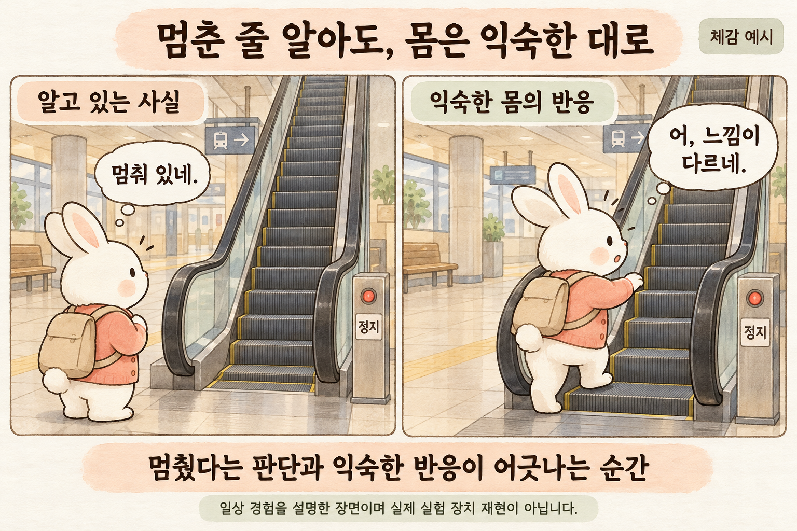
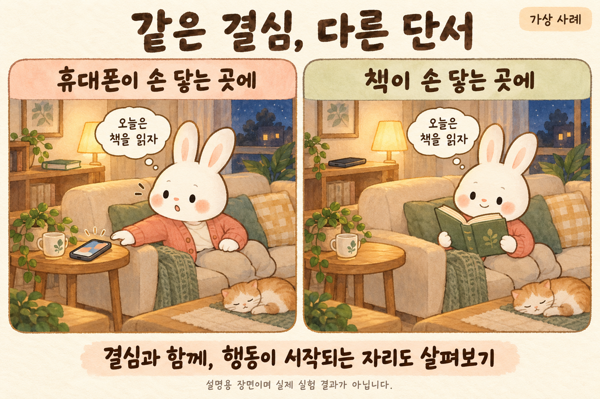
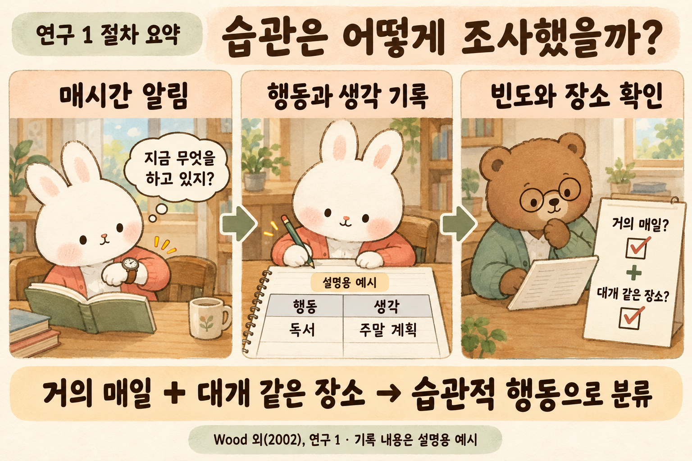
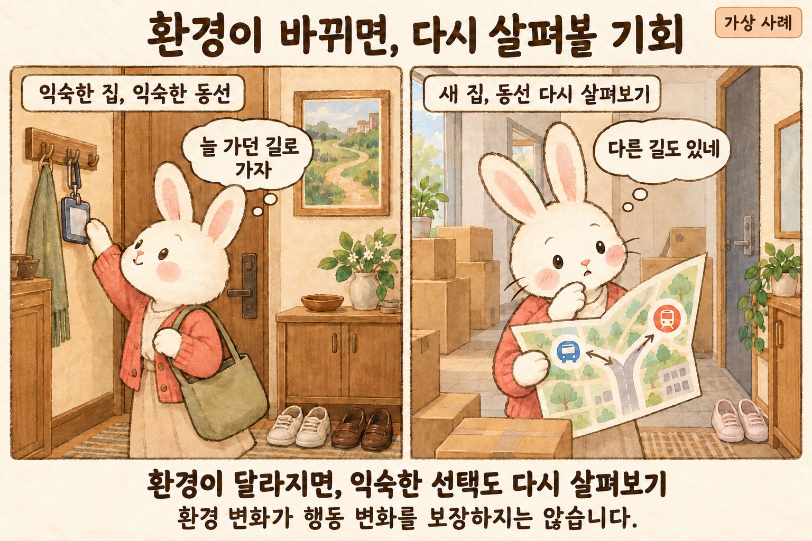
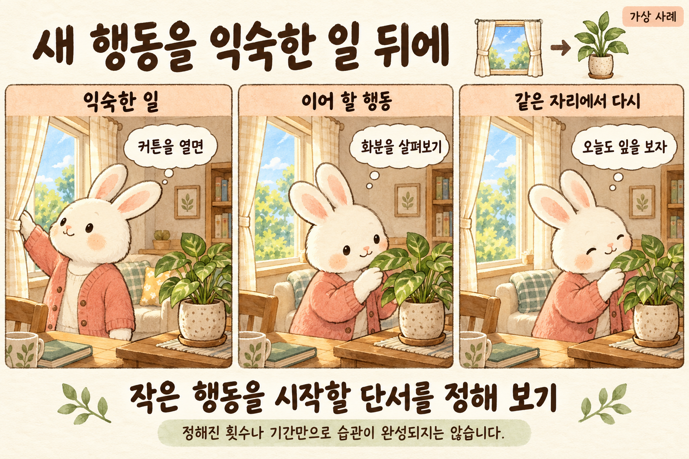
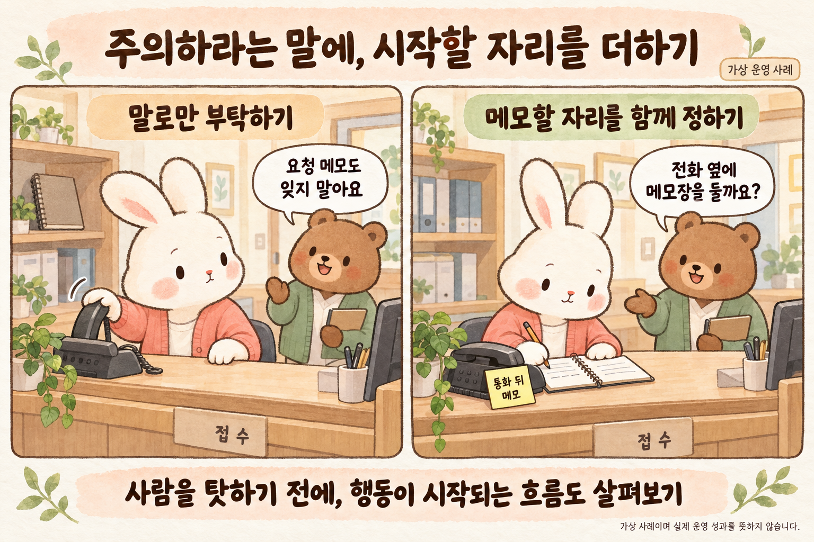

들어가며 · 멈춘 계단 앞에서
전원이 꺼진 에스컬레이터 앞에 선다. 계단은 움직이지 않고, 앞서 올라가는 사람의 발도 보인다. 그런데 첫발을 얹는 순간 몸이 잠깐 어색해진다. 머리로 확인한 정지 상태와, 몸이 준비한 움직임 사이에 작은 틈이 생긴 듯하다. 누구나 반드시 겪는 반응은 아니지만, 리처드 쇼튼은 원서 제5장 「습관」을 이런 일상의 낯섦으로 시작한다.
이 장면과 관련해 레이놀즈와 브론스타인이 연구한 것은 실제 에스컬레이터가 아니라 실험용 이동 발판이었다. 출판사 초록에 따르면, 참가자들은 정지한 발판과 움직이는 발판에 올라서는 과정을 거친 뒤, 다시 멈춘다는 명확한 안내를 받았다. 그래도 처음에는 이전 움직임에 적응한 반응이 잠깐 남았다. 운동 적응 연구의 결과이며, 구매 습관까지 같은 기제로 설명했다는 뜻은 아니다. [B1]

그 구별을 남겨두고, 여기서는 한 가지 질문만 가져오려 한다. 알고 있다는 사실은 행동의 어느 단계까지 도착해 있을까. 저녁에는 책을 읽겠다고 정한 사람이 소파에 앉자마자 휴대전화를 집는 장면을 떠올려 보자. 결심을 거짓말로 판정하기 전에 손이 향한 자리와 그 직전에 벌어진 일을 볼 여지가 있다.
1 · 결심이 놓인 자리, 손이 닿는 자리
가상의 두 거실이 있다. 두 사람 모두 잠들기 전에 책을 읽으려 한다. 한쪽에서는 휴대전화가 앉은 자리 바로 옆에 있고 책은 뒤편 가구 위에 있다. 다른 쪽에서는 읽던 책을 손에 들고 휴대전화는 떨어진 가구 위에 놓여 있다. 사람의 성격을 같게 만들 수는 없지만, 행동을 시작하는 데 필요한 동작이 서로 다르다는 점은 눈으로 확인할 수 있다.

이 그림은 물건을 옮겼더니 독서량이 늘었다는 실험 보고가 아니다. 행동을 한 덩어리로 부르는 대신 시작 부분을 나누어 보는 사고실험이다. 앉는다, 손을 뻗는다, 화면을 켠다. 혹은 책을 집고, 표시한 쪽을 연다. ‘책 읽기’라는 목표는 같아도 그 목표에 닿기 전에 거쳐야 할 길은 다를 수 있다.
책상 위의 책도 장식이 될 수 있다. 눈앞에 있다고 읽고 싶은 마음이 생기지는 않으며, 휴대전화를 멀리 두면 필요한 연락이 불편해질 수 있다. 그래서 환경을 바꾼다는 말을 물건의 위치만 정답처럼 외우는 처방으로 쓰면 곤란하다. 지금 바꾸려는 것은 무엇이며, 그 배치가 자신의 생활에서 실제로 무엇을 쉽게 하는지 함께 물어야 한다.
쇼튼이 습관을 소비자의 선택과 연결하는 지점도 이 부근이다. 사람은 상품을 고를 때마다 모든 후보를 처음부터 비교하지 않는다. 원서는 익숙한 행동이 이어지는 조건과 그 조건이 달라지는 순간에 주목한다. 이 글은 그 관점을 일상의 행동과 조직의 운영으로 넓혀 보되, 구매를 유도하는 요령을 삶 전체의 법칙으로 옮기지는 않으려 한다. [A]
2 · 습관을 어떻게 기록했을까
우드·퀸·캐시의 2002년 논문에는 두 일지 연구가 있다. 연구 1의 분석 대상 대학생 70명은 하루 동안, 연구 2의 209명은 이틀 동안 깨어 있는 시간에 매시 기록했다. 시계 신호에 맞춰 행동·생각·감정을 적고, 후속 질문으로 평소 빈도와 장소 등을 확인했다. 연구 1은 한 행동을, 연구 2는 동시에 하는 여러 행동도 기록할 수 있었다. [B2]

연구에서는 ‘거의 매일’ 하면서 ‘대개 같은 장소’에서 하는 행동을 습관적으로 분류했다. 그림의 독서와 주말 계획은 기록 방식을 보여주는 가상 예시이며 실제 참가자의 응답이 아니다. 행동과 생각을 나란히 적는 것은, 몸이 하는 일과 머릿속에 떠오르는 일이 얼마나 겹치는지 살펴보기 위한 방법이었다. [B2]
독자가 자신의 하루를 적어 본다면 실험을 재현하거나 스스로를 진단하는 일까지 할 필요는 없다. 점심을 먹은 뒤 무엇을 했는지, 어느 자리에 앉았는지, 손이 어디로 갔는지 한 장면만 구체적으로 남겨도 질문이 달라진다. ‘나는 자제력이 부족하다’는 문장 옆에 ‘식사 뒤 의자에 앉으면 화면부터 켠다’는 관찰이 생긴다.
다만 기록장은 평가표가 되기 쉽다. 바람직해 보이는 행동만 적거나 지난 일을 매끈하게 꾸밀 수도 있다. 자신의 기록을 읽을 때도 누가 옳은 사람인지 점수를 매기기보다, 다음에 확인할 장면을 찾는 편이 이 글의 목적에 맞는다. 아직 보지 못한 원인을 빈칸으로 남길 수 있어야 관찰이 자기비난과 달라진다.
3 · 숫자가 설명하는 범위
두 연구에서 습관으로 분류된 행동 비율의 참가자별 평균은 각각 35%와 43%였다. 원서가 소개하는 45%를 두 연구의 통합 결과로 사용하지 않겠다. 표본은 대학생이고 기록 기간과 방식도 제한돼 있다. 이 수치를 모든 사람의 하루 중 자동 행동이 차지하는 고정 비율로 읽을 수는 없다. 일지 자료의 관계만으로 원인과 결과를 확정할 수도 없다. [B2]
이 제한은 숫자를 덜 흥미롭게 만들지만, 질문은 더 쓸모 있게 한다. 내 하루의 몇 퍼센트가 습관인지 계산하는 것보다, 바꾸고 싶은 행동이 어떤 상황에서 되풀이되는지 확인하는 일이 먼저일 수 있다. 출근길, 식사 뒤, 잠들기 전은 서로 다른 장면이다. 같은 행동도 상황에 따라 목적과 비용이 달라질 수 있다.
예컨대 매일 같은 카페를 찾는 가상의 사람을 보자. 익숙한 길 때문일 수도 있고, 다른 가게가 문을 열지 않아서일 수도 있다. 맛이나 가격을 따져 계속 선택했을 가능성도 남아 있다. 반복을 발견했다고 해서 그 이유까지 알아낸 것은 아니다. 행동 기록에 시간표와 대안의 존재를 덧붙여야 설명이 조금 더 구체적이 된다.
따라서 운영자가 손님의 재방문을 보고 ‘습관을 만들었다’고 곧바로 결론 내리는 것도 이르다. 접근성, 만족, 계약 조건, 갈 곳의 부족을 구분해 볼 필요가 있다. 같은 방문 횟수를 만들어낸 경로가 다르면 바꿔야 할 문제도 달라진다. 이 구별은 논문이 보고한 결과가 아니라, 그 한계를 현장에 적용하며 이 글이 제안하는 해석이다.
4 · 목표와 습관은 함께 일할 수 있다
우드와 뤼거의 2016년 종설은 목표 추구와 습관의 관계를 함께 다룬다. 목표를 향해 특정 맥락에서 행동을 반복하면서 습관이 형성될 수 있고, 숙고와 익숙한 반응은 행동을 이끄는 데 함께 관여할 수 있다는 설명이다. 습관을 의지의 반대편에만 놓으면 이런 관계를 놓치게 된다. [C]
내일 아침 산책을 하겠다는 목표는 여전히 필요하다. 어디로 갈지, 비가 오면 어떻게 할지, 지금 몸 상태에 무리가 없는지 생각해야 한다. 다만 신발을 찾고 열쇠를 챙기는 과정까지 매번 처음부터 협상할 필요는 없게 만들 수 있다. 목표는 방향을 정하고, 익숙한 준비는 그 방향으로 나가는 일부 동작을 맡는다는 비유가 가능하다.
반대로 준비가 매끄러워졌다고 방향을 점검하는 일까지 끝나지는 않는다. 늘 하던 일이라는 이유로 불편한 약속을 유지하거나, 더 이상 필요 없는 서비스를 계속 이용할 수도 있다. 행동이 쉬워지는 것과 그 행동을 계속 원한다는 것은 서로 확인해야 할 질문이다. 익숙함을 돕는 장치와 가끔 멈춰 보는 시간이 함께 필요하다는 뜻이다.
조직에서도 같은 구별을 해볼 수 있다. 장부를 여는 순서가 익숙해지면 매일의 준비를 덜 설명해도 된다. 그러나 그 장부의 항목이 지금 업무에 필요한지는 별도로 검토해야 한다. 순서를 매끄럽게 만드는 일과 일의 목적을 결정하는 일을 한 질문으로 합치면, 오래된 절차를 잘 지키는 것이 좋은 일의 기준이 되기 쉽다.
5 · 생활이 바뀌면 길을 다시 보는가
원서는 이사나 직장 변경처럼 생활의 조건이 달라지는 시점을 변화의 기회로 다룬다. 저자 측 설문도 소개하지만, 그 수치만으로 인생 사건이 브랜드 변경을 일으켰다고 단정할 수는 없다. 여기서는 원서의 관점을 소개하는 데 그친다. 2016년 종설 역시 맥락의 변화와 기존 단서의 변화가 행동을 다시 선택할 여지를 줄 수 있다고 정리한다. [A·C]

새집에서 출근하는 가상의 사람은 버스 정류장과 지하철 입구를 다시 확인한다. 예전에는 묻지 않던 질문이 생긴다. 어느 길이 덜 붐비는가, 돌아오는 시간에도 가능한가, 비가 오면 어디로 걷는가. 그림은 이 재탐색을 보여준다. 이사를 하면 더 좋은 선택을 하게 된다거나 모든 기존 습관이 사라진다는 결과를 보여주지는 않는다.
변화의 시기는 기회인 동시에 부담일 수 있다. 낯선 길과 서류, 비용을 한꺼번에 처리하는 사람에게 새로운 서비스를 더 검토하라는 요구가 반갑지만은 않을 것이다. 마케팅의 관점에서는 접근할 시점으로 보이는 순간이 당사자에게는 쉬고 싶은 시점일 수 있다. 이 글이 그리는 응용은 그 차이를 먼저 인정하는 데서 출발한다.
도움을 준다면 비교할 정보를 한곳에 모으고, 지금 결정하지 않을 선택도 남겨둘 수 있다. 일정을 새로 짜는 사람에게 필요한 것은 선택 횟수를 늘리는 일보다 놓친 조건을 확인할 여유일 수도 있다. 변화가 생겼다는 사실을 알아차렸다면 설득의 강도를 높이기 전에, 상대가 무엇을 스스로 결정하고 싶은지 들어볼 이유가 있다.
6 · 반복할 행동의 크기를 정하기
이번에는 커튼을 연 뒤 화분을 살펴보는 가상의 장면이다. ‘식물을 잘 돌보자’는 넓은 목표를 ‘커튼을 열면 잎과 흙의 상태를 본다’는 시작 동작으로 바꾸어 본다. 그림 속 인물은 매번 물을 주지 않는다. 확인 뒤에 필요한 행동은 식물의 상태에 따라 달라져야 하기 때문이다. 반복할 것은 무조건 같은 처치가 아니라 살펴보는 출발점이다.

이 예시는 습관 형성의 효과를 측정한 실험이 아니라, 종설이 다루는 안정된 맥락에서의 반복을 생활 속에서 생각해 본 것이다. 그 종설은 바람직한 행동의 반복을 돕는 접근을 검토하면서도 형성을 단순한 횟수 하나로 설명하지 않는다. ‘몇 번 하면 완성’이라는 약속 대신, 같은 단서에서 시작할 기회가 실제로 생기는지를 볼 수 있다. [C·D]
한 번 건너뛰었을 때도 물을 질문이 있다. 커튼을 여는 시간이 달라졌는지, 화분이 보이지 않는 곳으로 옮겨졌는지, 그날 다른 일이 먼저 필요했는지 살펴본다. 이 관찰을 무조건 반복하라는 명령으로 바꾸면 생활의 사정을 놓친다. 새 행동을 자신의 하루에 맞추려는 시도이므로, 맞지 않는 연결을 수정하는 일도 과정에 포함할 수 있다.
성과를 확인하는 방식도 행동의 목적에 맞아야 한다. 화분을 살폈다는 표시를 많이 남기는 일과 식물을 적절히 돌보는 일은 같지 않다. 체크를 위해 불필요한 행동을 추가한다면 목표가 기록에 끌려간다. 이 사례를 책 읽기나 업무 준비로 옮길 때에도 무엇을 반복할지와 무엇으로 잘하고 있다고 판단할지를 따로 적어 볼 필요가 있다.
7 · 바꾸는 데 드는 비용을 함께 보기
습관의 언어는 행동을 시작하는 조건을 드러내지만, 생활의 제약까지 대신 설명해 주지는 않는다. 야간 근무를 하는 사람에게 고정된 아침 일과를 권하거나, 책상을 함께 쓰는 사람에게 물건을 늘 같은 자리에 두라고 요구하는 장면을 생각해 보자. 조언의 논리는 단정해 보여도 당사자가 바꿀 수 있는 범위와 맞지 않을 수 있다.
경제의 언어를 빌리면 새 행동에는 돈뿐 아니라 이동, 준비, 대기, 다시 배우는 비용이 든다. 이것은 이번 연구에서 측정한 결과가 아니라 현실을 읽기 위한 관점이다. 계획이 지켜지지 않을 때 그 비용이 어디에 몰렸는지 묻는 일은, 개인의 결심만 평가하는 것과 다른 정보를 준다. 누군가에게 짧은 동작이 다른 사람에게도 짧으리라는 보장은 없다.
가상의 직원이 새 기록 양식을 쓰지 않는 이유도 여러 가지다. 양식이 멀리 있을 수 있고, 입력할 시간이 없거나, 같은 내용을 두 번 쓰게 되어 있을 수 있다. 기억하기 쉽게 만드는 조치가 도움이 될 가능성은 있지만, 중복 업무를 그대로 둔 채 안내문만 붙이면 불편의 원인을 가릴 수 있다. 무엇이 막혔는지부터 확인해야 할 이유다.
여기서 공정함의 질문이 생긴다. 환경을 바꿀 권한을 가진 사람이 그 비용을 다른 사람에게 옮기고 있지는 않은가. 관리자가 확인하기 편해진 만큼 현장의 동작이 늘어났다면 누구의 습관을 돕는 설계인지 다시 물어야 한다. 좋은 일과를 논의하는 자리에는 그것을 수행할 사람의 시간과 선택권도 올라와야 한다.
8 · 편해진 선택을 되돌릴 수 있어야 한다
습관을 돕는 장치는 운영자의 목적에도 쓰일 수 있다. 예컨대 다음 예약을 자동으로 잡아 두는 방식은 매번 연락하는 수고를 줄여 보인다. 그러나 상대가 원하지 않는 예약을 취소하려면 여러 화면과 통화를 거쳐야 한다면, 편리함이 누구에게 돌아가는지 불분명해진다. 행동을 이어가기 쉬운 만큼 중단과 변경도 알아보기 쉬워야 한다는 것이 이 글의 기준이다.
선택이 쉬워졌는지 확인하려면 단순히 같은 행동이 더 많아졌는지만 볼 수는 없다. 조건을 알고 선택했는가, 다른 방법을 찾을 수 있었는가, 잘못 눌렀을 때 바로 고칠 수 있었는가도 함께 살펴볼 수 있다. 이런 질문은 습관 연구의 결과 지표를 그대로 옮긴 것이 아니다. 그 지식을 서비스에 적용하는 사람이 별도로 책임져야 할 판단이다.
자기 생활을 바꾸는 경우에도 중단의 여지는 남는다. 예전에 세운 목표가 지금도 필요한지 확인하고, 계속하지 않을 이유가 생겼다면 계획을 고칠 수 있다. 오래 이어 온 행동을 멈춘다는 사실만으로 실패가 되지는 않는다. 익숙하게 해낼 수 있는 능력과, 그 능력을 어디에 쓸지 정하는 권리는 함께 다뤄져야 한다.
9 · 한의원에서 먼저 물어볼 것
가상의 한의원이 안내를 개선한다고 하자. 환자가 같은 질문을 반복하면 설명을 듣지 않았다고 생각하기 쉽다. 그러나 안내를 받은 시간, 글씨의 크기, 언어, 집에서 다시 찾는 방법이 각각 걸림돌일 수 있다. 이 장면은 실제 환자 자료나 치료 효과를 보고하는 사례가 아니라, 정보를 전달하는 운영을 검토하기 위한 예시다.
담당자는 당사자가 원하는 방식으로 안내를 다시 확인할 수 있게 하고, 이해하기 어려운 부분을 묻는다. 일정 알림도 받을 방법과 빈도를 선택하게 할 수 있다. 여기서 살펴볼 것은 예약을 더 많이 유지시키는 요령보다, 필요한 정보를 찾고 일정을 고칠 수 있는지다. 어떤 방식이 편한지 당사자에게 확인해야 하며 특정 설계의 성과를 미리 약속할 수는 없다.
진료 판단과 운영 편의도 구별해야 한다. 설명을 찾기 쉬워졌다고 치료가 더 효과적이라는 결론이 나오는 것은 아니다. 같은 방문을 반복한다고 그것이 필요한 진료라는 뜻도 아니다. 필요한 판단을 숙련된 의료진과 충분히 논의할 수 있도록 돕는 일과, 반복 자체를 늘리는 일은 다른 목표다. 습관의 설명이 그 경계를 흐려서는 곤란하다.
10 · ‘주의하세요’ 다음에 놓을 것
같은 가상 한의원의 접수대에서 전화 전달 사항이 빠지는 일이 있다고 하자. 동료에게 더 주의하라고 말한 뒤에도 문제가 남는다면 통화가 끝나는 장면을 함께 살펴볼 수 있다. 다음 전화를 받아야 하는지, 메모할 곳이 있는지, 필요한 항목이 명확한지 묻는다. 잘못한 사람을 빨리 찾는 일과 동작이 끊기는 곳을 찾는 일은 서로 다른 정보를 준다.
전화 옆에 업무용 메모 수단을 두고 ‘통화 뒤 필요한 전달 사항 확인’이라는 시작점을 정해 보는 방안을 생각할 수 있다. 그림의 선과 항목은 내용을 비운 설명용 표기다. 실제로 적용한다면 개인정보가 타인에게 보이지 않도록 기관의 보관·접근 절차에 맞는 수단을 골라야 한다. 눈에 잘 보이는 배치가 정보 노출로 이어져서는 안 된다.

배치만 바꾸고 성공했다고 선언할 수는 없다. 사용하는 사람이 기록할 틈이 있는지, 전달 대상이 분명한지, 급한 업무와 충돌하는지 확인해야 한다. 메모 수가 늘었더라도 전달이 더 정확해졌는지는 별개의 질문이다. 작은 범위에서 사용해 보고 누락과 중복, 불편을 함께 살피는 운영 제안이며 이 그림으로 효과가 검증됐다는 뜻은 아니다.
직원이 제안한 다른 방법도 비교할 수 있다. 이미 쓰는 화면에서 전달을 마치는 편이 낫다면 새 메모장을 고집할 이유가 없다. 습관을 이해하는 목적은 특정 도구를 설치하는 데 있지 않다. 일하는 사람이 필요한 행동을 시작하고 마칠 수 있게 조건을 정리하는 데 있다. 그 과정에서 필요 없는 단계가 발견되면 지우는 것도 가능한 개선이다.
나가며 · 다시 선택할 자리를 남기기
처음의 멈춘 에스컬레이터로 돌아가 보자. 몸이 잠깐 어색하게 움직였다고 해서 상황을 몰랐던 사람이 되는 것은 아니다. 그 장면을 모든 행동의 설명으로 확대할 필요도 없다. 다만 결심과 실제 동작 사이를 관찰할 이유는 남는다. ‘왜 바뀌지 않았나’라는 질문 옆에 ‘어디에서 시작했고 무엇이 이어졌나’라는 질문을 놓아 볼 수 있다.
오늘 바꿀 행동이 있다면 하루 전체를 고치겠다는 계획보다 한 장면을 골라 볼 수 있다. 시작 직전에 무엇을 하는지, 필요한 도구가 어디에 있는지, 다른 선택을 가로막는 사정은 무엇인지 적는다. 그런 뒤 자신이 바꿀 수 있는 조건 하나를 정하고 다시 살펴본다. 이 제안은 성공을 보장하는 공식이 아니라 생활을 구체적으로 알아가기 위한 작은 시도다.
익숙한 행동은 시간을 아껴 줄 수 있고, 더 이상 원하지 않는 길을 계속 걷게 할 수도 있다. 그래서 필요한 것은 매 순간 모든 일을 숙고하는 삶도, 모든 일을 자동으로 만드는 삶도 아닐 것이다. 원하는 방향으로 나가기 쉬운 자리를 만들면서, 그 방향을 고칠 때 돌아올 자리도 남기는 것. 선택하는 인간에게 습관은 그렇게 다시 물을 수 있는 생활의 일부다.